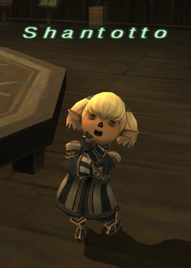
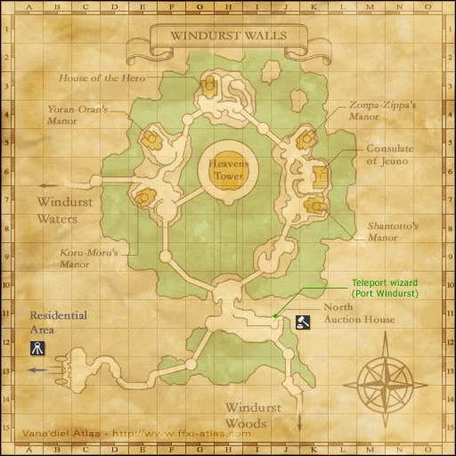
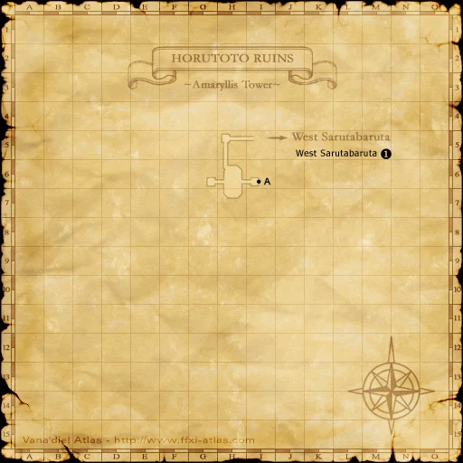
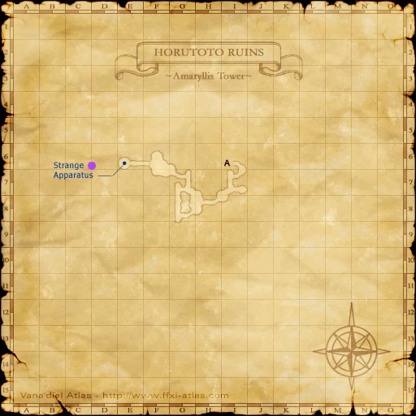
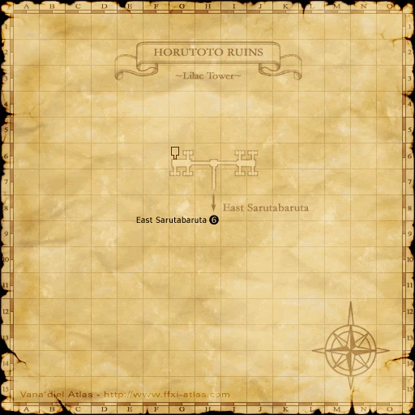
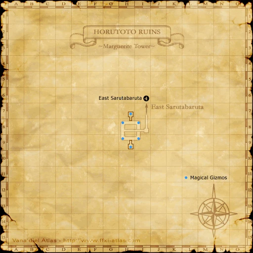
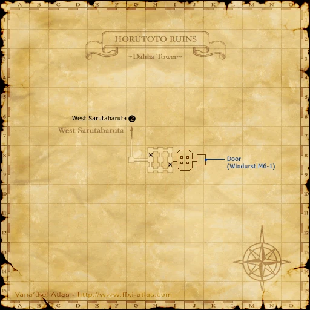

Before you begin
- Complete AMK 4.
Starting point
Shantotto · Windurst Walls · K-7
Era note: 2009 level-75-era add-on. Modern retail shortcuts and item-level solo claims are not assumed on Zenith.
People in this mission


Walkthrough
- Talk to Shantotto at her Windurst Walls residence at K-7.
- Finish the scene in which she requests the reagent from Outer Horutoto Ruins. Confirm An Errand! The Professor's Price is active before farming Cardians.
Completion and reward
Story progression.
What this opens
- AMK 6
Area maps
Open a zone below, then select a map to enlarge it. Match the named floors and grid coordinates in the steps; these are reference area maps, not a live position tracker.
Windurst Walls



Outer Horutoto Ruins















Zone guides
References
Steps are an original summary of the linked walkthrough and reviewed source. Other servers’ bonus rewards are not included. How to read requirements, waits and battlefield notes.